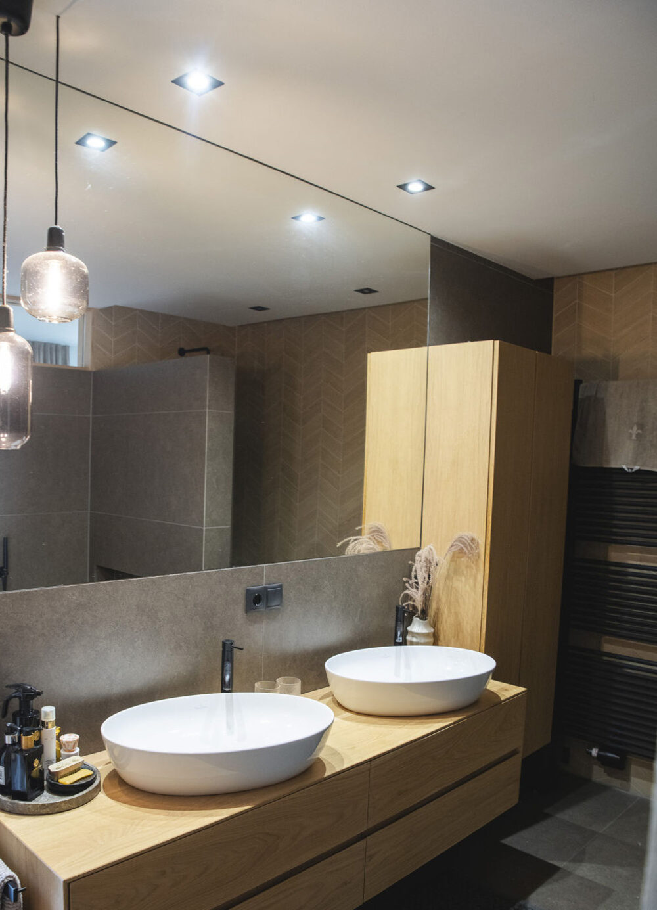
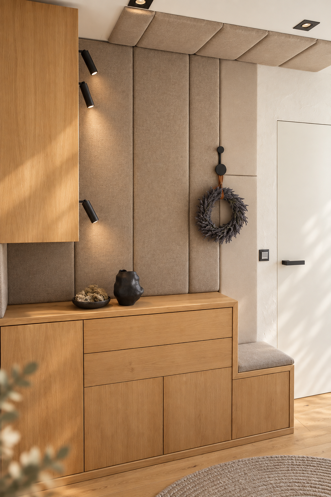
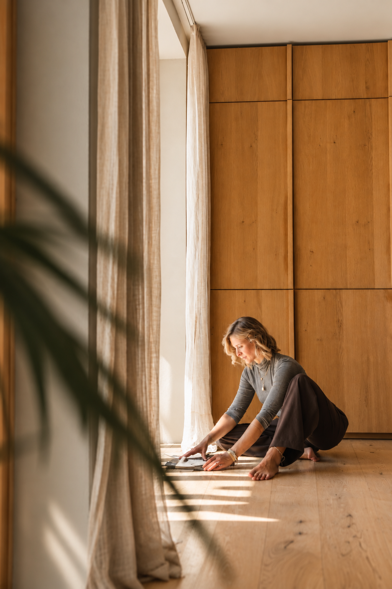
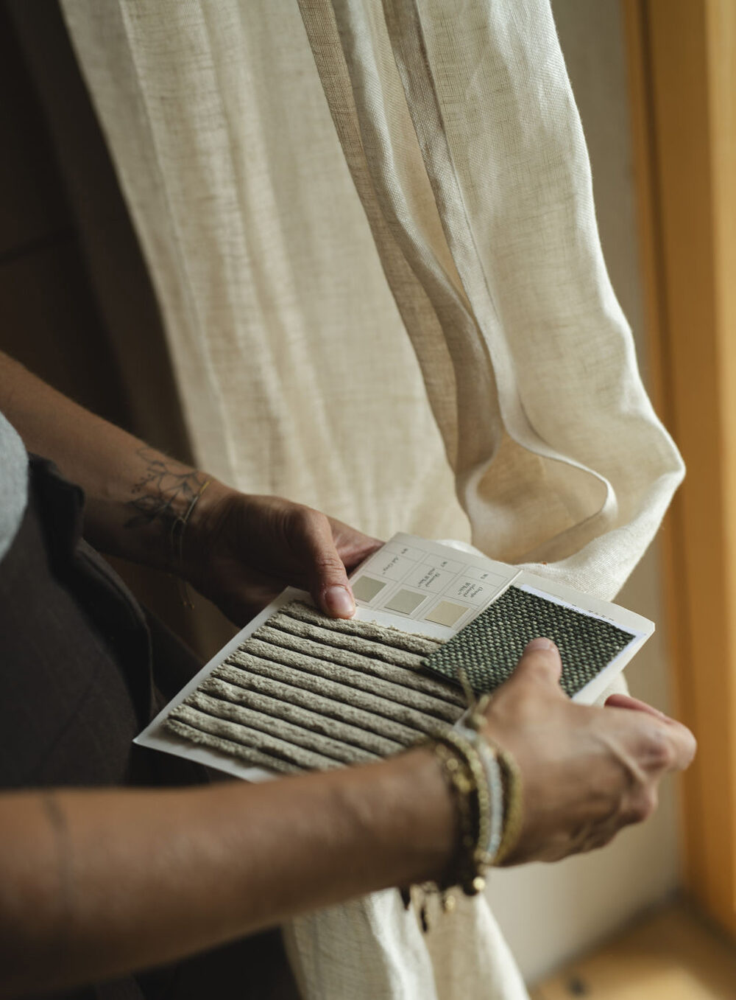
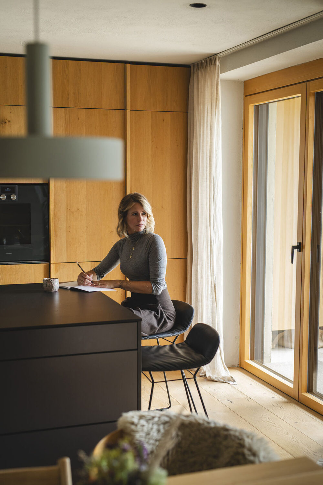
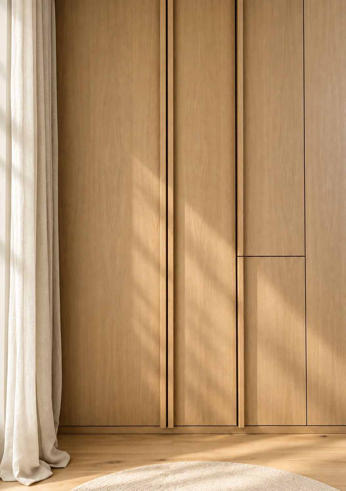

Interior
Design

So wie wir Räume gestalten, prägen sie unser Leben. Sie beeinflussen unser Wohlbefinden, unsere Gesundheit und unseren Alltag — und schaffen Raum für Erfolg, Zufriedenheit und persönliche Entwicklung.
Ein gutes Interior Design spiegelt die Menschen wider, die darin leben oder arbeiten. Es greift den Charakter eines Raumes auf, spielt mit seinem Charme und entwickelt daraus Lösungen, die schön, persönlich und praktisch sind.
Ob kleine Nische im Haus, einzelner Raum, gesamtes Wohnkonzept oder Interior Branding für dein Unternehmen – im Rahmen deiner budgetären Möglichkeiten finden wir heraus, was zu dir passt und du wirklich brauchst.
Manchmal reicht bereits ein Beratungsgespräch für konkrete Impulse, manchmal macht es aber Sinn bereits vor oder während des Hausbaus oder Umbaus als Sparringpartnerin zu begleiten – etwa bei der Optimierung eines Grundrisses, Lichtplanung, Materialauswahl, Küchenplanung oder gestalterischen Entscheidungen bis hin zum finalen Feinschliff.
Ergänzend biete ich Interior Design Workshops an, in denen ich Grundlagen der Raumgestaltung weitergebe und gemeinsam mit den TeilnehmerInnen persönliche Moodboards entwickle.
„Atmosphäre entsteht nicht zufällig. Sie ist das Ergebnis durchdachter Gestaltung – und spürbar, wenn sich ein Raum vertraut anfühlt.“





